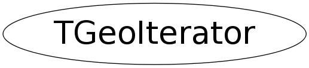

class TGeoIterator
TGeoNode A node represent a volume positioned inside another.They store links to both volumes and to the TGeoMatrix representing the relative positioning. Node are never instanciated directly by users, but created as a result of volume operations. Adding a volume named A with a given user ID inside a volume B will create a node node named A_ID. This will be added to the list of nodes stored by B. Also, when applying a division operation in N slices to a volume A, a list of nodes B_1, B_2, ..., B_N is also created. A node B_i does not represent a unique object in the geometry because its container A might be at its turn positioned as node inside several other volumes. Only when a complete branch of nodes is fully defined up to the top node in the geometry, a given path like: /TOP_1/.../A_3/B_7 will represent an unique object. Its global transformation matrix can be computed as the pile-up of all local transformations in its branch. We will therefore call "logical graph" the hierarchy defined by nodes and volumes. The expansion of the logical graph by all possible paths defines a tree sructure where all nodes are unique "touchable" objects. We will call this the "physical tree". Unlike the logical graph, the physical tree can become a huge structure with several milions of nodes in case of complex geometries, therefore it is not always a good idea to keep it transient in memory. Since a the logical and physical structures are correlated, the modeller rather keeps track only of the current branch, updating the current global matrix at each change of the level in geometry. The current physical node is not an object that can be asked for at a given moment, but rather represented by the combination: current node + current global matrix. However, physical nodes have unique ID's that can be retreived for a given modeler state. These can be fed back to the modeler in order to force a physical node to become current. The advantage of this comes from the fact that all navigation queries check first the current node, therefore knowing the location of a point in the geometry can be saved as a starting state for later use. Nodes can be declared as "overlapping" in case they do overlap with other nodes inside the same container or extrude this container. Non-overlapping nodes can be created with: TGeoVolume::AddNode(TGeoVolume *daughter, Int_t copy_No, TGeoMatrix *matr); The creation of overapping nodes can be done with a similar prototype: TGeoVolume::AddNodeOverlap(same arguments); When closing the geometry, overlapping nodes perform a check of possible overlaps with their neighbours. These are stored and checked all the time during navigation, therefore navigation is slower when embedding such nodes into geometry. Node have visualization attributes as volume have. When undefined by users, painting a node on a pad will take the corresponding volume attributes./*
 */
*/
Function Members (Methods)
public:
| TGeoIterator(TGeoVolume* top) | |
| TGeoIterator(const TGeoIterator& iter) | |
| virtual | ~TGeoIterator() |
| static TClass* | Class() |
| const TGeoMatrix* | GetCurrentMatrix() const |
| Int_t | GetIndex(Int_t i) const |
| Int_t | GetLevel() const |
| TGeoNode* | GetNode(Int_t level) const |
| void | GetPath(TString& path) const |
| TGeoVolume* | GetTopVolume() const |
| Int_t | GetType() const |
| TGeoIteratorPlugin* | GetUserPlugin() const |
| virtual TClass* | IsA() const |
| TGeoNode* | Next() |
| TGeoNode* | operator()() |
| TGeoIterator& | operator=(const TGeoIterator& iter) |
| void | Reset(TGeoVolume* top = 0) |
| void | SetPluginAutoexec(Bool_t mode) |
| void | SetTopName(const char* name) |
| void | SetType(Int_t type) |
| void | SetUserPlugin(TGeoIteratorPlugin* plugin) |
| virtual void | ShowMembers(TMemberInspector& insp) |
| void | Skip() |
| virtual void | Streamer(TBuffer& b) |
| void | StreamerNVirtual(TBuffer& b) |
protected:
| TGeoIterator() |
private:
| void | IncreaseArray() |
Data Members
private:
| Int_t* | fArray | Array of node indices for the current path |
| Int_t | fLevel | Current level in the tree |
| TGeoHMatrix* | fMatrix | Current global matrix |
| Bool_t | fMustResume | Private flag to resume from current node. |
| Bool_t | fMustStop | Private flag to signal that the iterator has finished. |
| TGeoIteratorPlugin* | fPlugin | User iterator plugin |
| Bool_t | fPluginAutoexec | Plugin automatically executed during next() |
| TGeoVolume* | fTop | Top volume of the iterated branch |
| TString | fTopName | User name for top |
| Int_t | fType | Type of iteration |
Class Charts
{kind=link}
{kind=link}
{kind=link}
{kind=link}

Function documentation
void Skip()
Stop iterating the current branch. The iteration of the next node will behave as if the branch starting from the current node (included) is not existing.